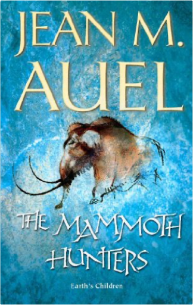
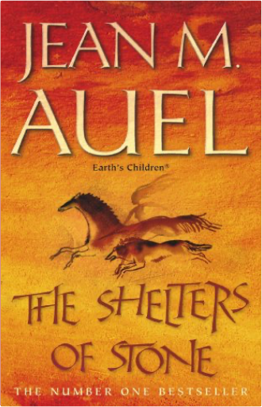
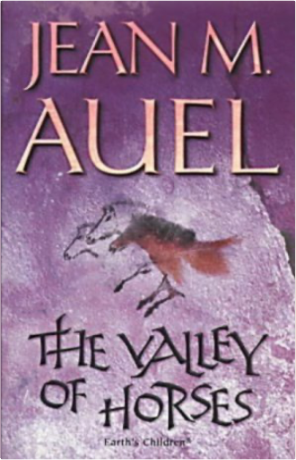

The Prodigal DaughterJeffrey Archer  With a will of steel, Polish immigrant Florentyna Rosnovski is indeed Abel's daughter. She shares with her father a love of America, his ideals, and his dream for the future. But she wants more to be the first female president.  Sons of FortuneJeffrey Archer Sons of FortuneJeffrey Archer Bestselling author Jeffrey Archer returns with a powerful tale of twins separated by fate and reunited by desitiny. It is Hartford, Connecticut, in the late 1940's, and a set of twins is separated at birth by a desperate nurse. Nat Cartwright goes home with his parents, a schoolteacher and an insurance salesman. But his twin brother is to begin his days as Fletcher Andrew Davenport, son of a wealthy CEO and his society wife. During the years that follow, the two brothers grow up unaware of each other's existence. Nat leaves college at the University of Connecticut to serve in Vietnam. Returning a war hero, he finishes school and goes on to become a successful bank executive. Fletcher, meanwhile, has graduated from Yale University and distinguishes himself as a criminal defense lawyer before he is elected a senator. As their lives unfold, both men are confronted with tragedy and betrayal, loss and hardship, all the time overcoming life's obstacles to become the men they are destined to be. In the tradition of Jeffrey Archer's most popular books, SONS OF FORTUNE is as much a chronicle of a nation in transition as it is the story of the making of these two men - and how, eventually, they come to find each other... Mammoth HuntersJean M Auel Leaving the valley of horses with Jondalar, the handsome man she has nursed back to health and come to love, Ayla embarks on a journey that will lead her to the Mamutoi; the Mammoth Hunters. But as she settles into this new life among a people at first strange and disturbingly different, Ayla finds herself irresistibly drawn to Ranec, their master-carver. Ultimately, she is compelled to make a fateful choice between the two men. Jean Auel's imaginative reconstruction of pre-historic life, rich in detail of language, culture, myth and ritual, has become a set text in schools and colleges around the world.  Plains of PassageJean M Auel Plains of PassageJean M Auel Ayla and Jondalar leave the safety of the lands of the Mammoth Hunters and embark on a seemingly impossible journey across an entire continent. Their goal is the Cro-Magnon settlement in what is now southern France, where Jondalar lived as a young man. Accompanied by the half-tame Wolf, the superb stallion, Racer, and the mare, Whinney, they brave both savage enemies and the elemental dangers of weather and terrain in their search for the place that will become Home. Jean Auel's imaginative reconstruction of pre-historic life, rich in detail of language, culture, myth and ritual, has become a set text in schools and colleges around the world. Shelters of StoneJean M Auel Ayla and Jondalar have reached home: the Ninth Cave of the Zelandonii, the old stone age settlement in the region known today as south-west France. Ayla has much to learn from the Zelandonii as well as much to teach them. Jondalar's family are initially wary of the beautiful young woman he has brought back, with her strange accent and her tame wolf and horses. She is delighted when she meets Zelandoni, the spiritual leader of her people, a fellow healer with whom she can share her medicinal skills. After the rigours and dangers that have characterised her extraordinary life, Ayla yearns for peace and tranquillity; to be Jondalar's mate and to have children. But her unique spiritual gifts cannot be ignored, and even as she gives birth to their eagerly-awaited child, she is coming to accept that she has a greater role to play in the destiny of the Zelandonii. Valley of HorsesJean M Auel Forced to leave the Clan and her young son, Ayla sets out alone to travel the frigid steppes until she finds the valley of horses. Unable to find people like herself, the Cro-Magnons, she settles there and seeks friendship elsewhere. First she adopts a young filly, then a wounded lion cub. But far to the west, two young Cro-Magnon brothers have begun a journey. One of them is Jondalar, whose destiny is bound inextricably with Ayla's. Jean Auel's imaginative reconstruction of pre-historic life, rich in detail of language, culture, myth and ritual, has become a set text in schools and colleges around the world.  Land of Painted CavesJean M. Auel Land of Painted CavesJean M. Auel THE LAND OF PAINTED CAVES concludes the story of Ayla, her mate Jondalar, and their little daughter, Jonayla, taking readers on a journey of discovery and adventure as Ayla struggles to find a balance between her duties as a new mother and her training to become a Zelandoni - one of the Ninth Cave community's spiritual leaders and healers. Once again, Jean Auel combines her brilliant narrative skills and appealing characters with a remarkable re-creation of the way life was lived thousands of years ago, rendering the terrain, dwelling places, longings, beliefs, creativity and daily lives of Ice Age Europeans as real to the reader as today's news. Angels and DemonsDan Brown When a scientist is found brutally murdered, Harvard professor Robert Langdon is asked to identify the mysterious symbol seared onto the dead man's chest. Realising it must be the work of the Illuminati - an ancient secret brotherhood sworn against Catholicism - the race is on to prevent a tragedy. |


 Made with Delicious Library
Made with Delicious LibrarySpringfield, State zipflap congrotus delicious library Doddridge, Edward